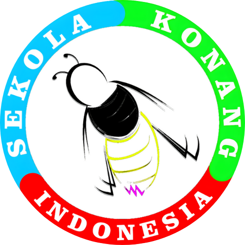

Monitoring Penanaman
Sistem Informasi Sebaran Penanaman & Sipil Teknis
Dashboard Utama
Total Pohon Ditanam
0
Akumulasi 2021-2025
Total Rorak
0
Unit Sipil Teknis
Total Sumur & Biopori
0
Unit Infiltrasi
Peta Sebaran
Sampling & Area
Realisasi Tahunan
Komposisi Jenis
Pembuatan Rorak
Sumur & Biopori
Water Balance
Kalkulasi Neraca Air
Sedang dalam proses penghitungan tim ahli.
Dalam Pengembangan
Riwayat Program Tahunan
Tahun
Nama Program / Lokasi
Pohon
Rorak
Sipil Teknis Lain
Aksi